Blog
Blog
连续型数值预测-回归
一、什么叫做回归首先想象你有一辆车，然后你想预测汽车的功率大小，你可以根据公式：
z = ax + by
轻松的算出任意 x,y 已知的汽车功率的大小。这个公式便是回归方程，其中 a 和 b 叫做回归系数。
一旦有了这些回归系数，再给定输入，作预测就变得非常容易了。
简单来说，回归（一般指线性回归）意味着将输入值乘以某些固定值，再将结果加起来得到输出值。
二、回归系数的计算
我们已经知道，对于回归问题来说如果知道了回归方程，那么问题将变得非常简单，
但问题是如何求回归方程中的回归系数呢？假定输入值放在矩阵 X 中，回归系数在向量 W 中，结果放在向量 y 中。
表示如下：
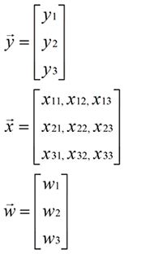
那么对于给定的数据 X1，预测结果将会通过 Y1 = X1 * W 给出。现在问题是，手里有一大堆 X 和 Y，
如何才能找到 W 呢？一个常用的方法就是找出使得误差最小的 W，这里的误差指的是预测值与真实值之间的差值，
使用该误差的简单累加将使得正负误差相互抵消，所以我们这里采用平方误差。
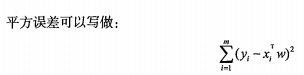
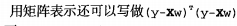
现在我们的目标是找到使得平方误差和最小的 W，因此需要对 W 求导，但这个公式可谓是清新脱俗，为啥呢？
因为这不是一般的求导，而是标量对向量的求导。所以让我们先来看一下如何对矩阵进行求导吧。
方式一：通过矩阵求解 w
大概了解矩阵求导之后，让我们来解决实际问题吧。根据公式
 不难看出，
不难看出，这是一个 u(w) · (w) 的求导问题，直接求导该问题比较复杂，因此我们可以先将其展开，再逐项求导最后求和。
展开得到: 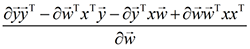
对第一项进行求导，可以看到，该项分子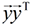是一个与 w 无关的标量，因此第一项求导结果为：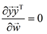
接下来看第二项，该项分子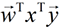是一个长度为 1 的向量，通过分母布局得到求导结果为： 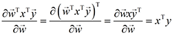
第三项的分子为 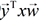 也是一个长度为 1 的向量，同样通过分母布局求导结果为：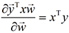
最后一项，分子是一个与 w 有关的标量，通过分母布局得到求导结果为 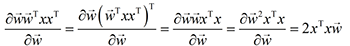
因此，整个式子的求导结果为：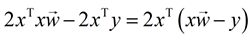，令其等于 0 ，得到 w 为

w 上的符号表示，这是当前可得到的最优解。这是因为从现有数据集上估计出的 w 值可能并不是数据集上真实的 w 值。
值得注意的是，w 中需要对矩阵求逆，但并非所有的矩阵都存在逆矩阵，因此需要用代码进行判断。
方式二：通过最小二乘法求 w
上述通过矩阵求解 w 的方法是统计学中常用的求解方法，除此之外还有很多方法可以对其进行求解。
我们可以通过调用 numpy 库里的矩阵方法对其求解，该方式只需要简单的几行代码，该方法也称作
OLS(即最小二乘法 ordinary least squares)
三、实战代码
1. 加载数据
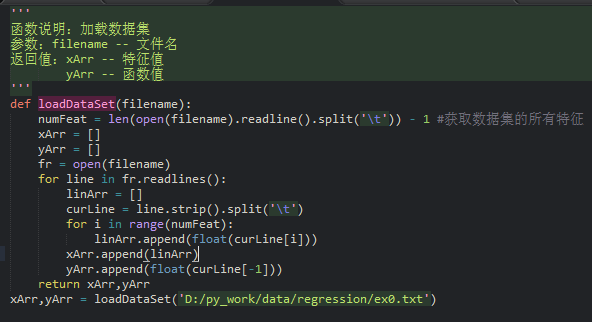
2. 可视化数据集
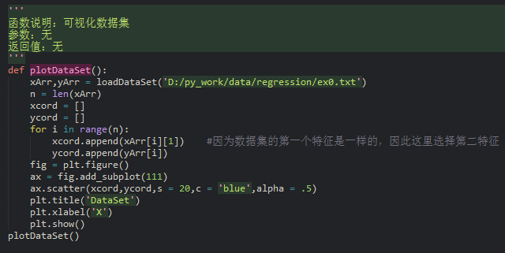
执行结果
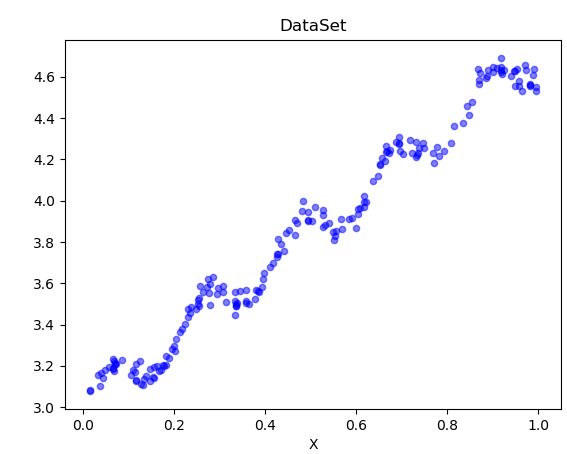
我们已经看到数据集的分布情况如上图散点图所示，接下来我们要用刚刚学到的方法求出回归系数，并绘制出回归曲线。
3. 求解回归系数
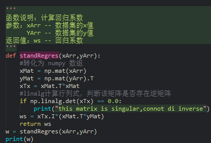
执行结果
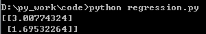
4. 根据回归系数绘制回归曲线
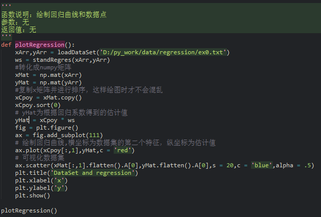
绘制的回归曲线如下所示：
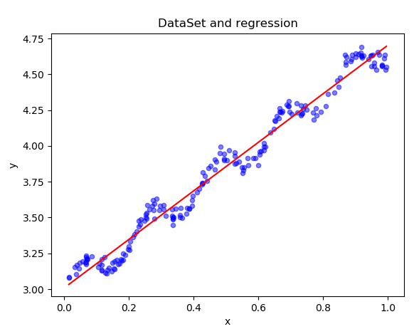
目前为止，我们已经求出了回归系数，并绘制出了回归曲线。但预测值终归是预测的，不是真实值，
那么我们如何判定这条回归曲线的拟合度呢？有种方法是计算预测值 yHat 序列与真实值 y 序列的
匹配程度，那就是计算这两个序列的相关系数。
四、回归曲线拟合度的判定
numpy 库十分强大，它提供了相关系数的计算方法，可通过命令 corrcoef(yEstimate,yActual)
来计算预测值和真实值之间的相关性。

计算得到的相关系数：

根据执行结果可以看到，对角线上的值为 1，这是因为数据和自己匹配是最完美的。而 yHat 与 yMat 的相关系数是 0.98。
最佳拟合直线方法将数据视为直线进行建模，具有十分不错的表现。但数据中似乎还存在着其他潜在模式，
那么如何才能利用这些模式呢？我们可以根据数据来局部调整预测。
五、局部加权线性回归
线性回归有个问题是有可能出现欠拟合现象。这是因为它求的是具有最小均方误差的无偏估计。
显然，如果模型欠拟合将不能取得最好的预测结果，所以有的方法允许在估计时引入一定的偏差，
从而降低预测的均方误差。其中的一个方法就是局部加权线性回归。
局部加权线性回归算法(Locally Weighted Linear Regression，LWLR)：在算法中，我们给待预测点
附近的点赋予一定的权重，然后跟标准线性回归方法一样，在这个子集上基于最小均方差来进行普通回归。
与 KNN 一样，这种方法在预测前需要事先选出对应的数据子集。
该算法计算 w 的公式如下：
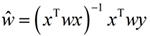
其中 w 是一个矩阵，用于记录子集中每个数据点的权重。
LWLR 使用核（与支持向量机的核类似）来对附近的点赋予更高的权重，核的类型可以自由选择，
但最长用的就是高斯核。高斯核对应的权重如下：
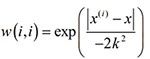
这样就构建了一个只含对角元素的权重矩阵 w,并且点 x 与 点 x(i) 越近，w(i,i) 将越大。
上述公式包含一个需要用户指定的参数 k，它决定了对附近的点赋予多大的权重。
k 的值与数据集选取的关系：

局部加权线性回归代码
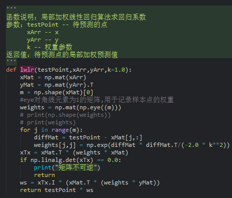
为待测数据集中的每个数据点执行 LWLR 算法

绘制多条局部加权线性回归曲线
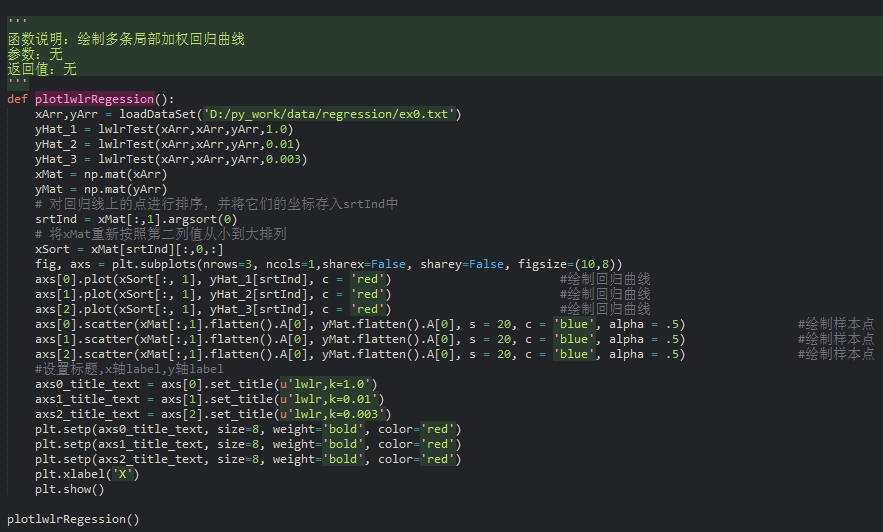
绘制曲线如图：
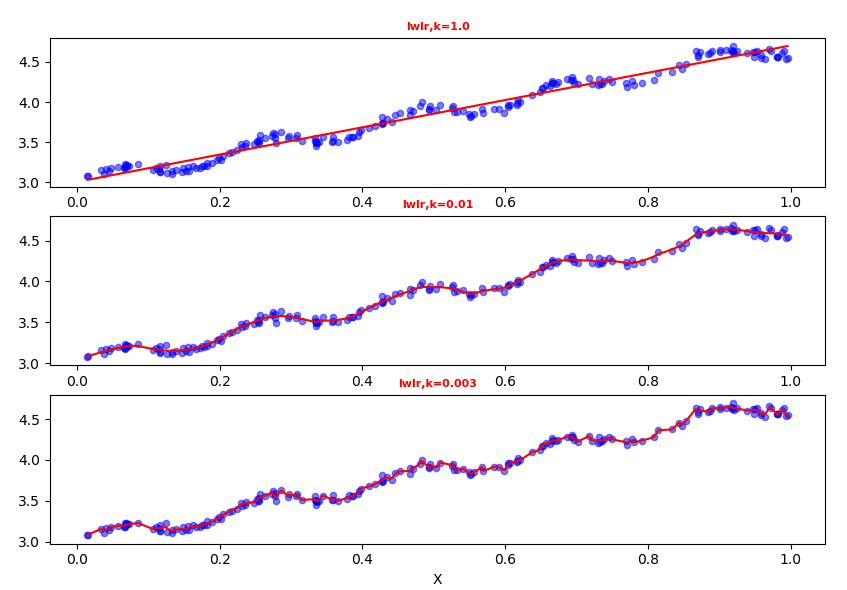
根据绘制出的曲线，我们可以看出，当 k = 1.0 时，所有的数据具有相同的权重，其曲线与标准线性回归曲线一致；
当 k = 0.01 时，得到了非常好的效果，抓住了数据的潜在模式；当 k = 0.003 时，纳入了太多的噪声点，
预测值与真实值太过于贴近。图一属于欠拟合，而图三属于过拟合。
数据集下载
完整代码